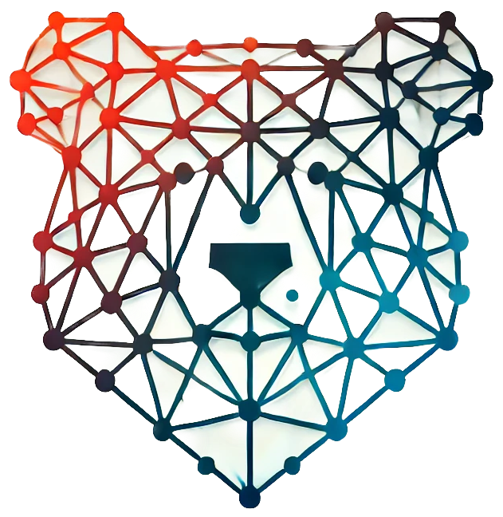

BareLogic, Inc.
Today, we are introducing BareLogic, a company focused on revolutionizing software optimization through minimal AI and active learning methods. Our goal is to simplify and accelerate the way software engineering problems are solved using powerful, yet lightweight tools.
At BareLogic, we aim to bridge the gap between traditional optimization methods and the potential of AI by creating algorithms that are not only effective but also minimalistic. We believe that software engineering can benefit from AI that is more interpretable, less resource-hungry, and capable of delivering actionable results with minimal data.
Our approach involves the development of advanced algorithms that reduce the complexity of large-scale optimization problems, using techniques like recursive feature selection, weighted clustering, and decision trees. These methods will push the boundaries of optimization in areas like multi-objective optimization, configuration management, and defect prediction, all while ensuring that the algorithms remain understandable and easy to implement.
We are committed to advancing the state of the art in software ngineering by providing tools that empower both engineers and AI to work together effectively. The broader impact of our work will be seen in the efficiency and scalability of software systems, reducing the time and effort required for development while improving reliability and performance.
The market for AI-driven software solutions is vast, as businesses around the world seek more efficient ways to build, test, and deploy software systems. As we continue to innovate and expand, we anticipate that our contributions will play a significant role in shaping the future of software engineering.
BareLogic is led by Dr. Tim Menzies, an expert in software engineering, optimization, and minimal AI, backed by a team of experienced researchers and practitioners in the field.
We are hiring a research engineer.
For inquiries, you can reach us at contact@barelogic.ai
This page is designed to last.